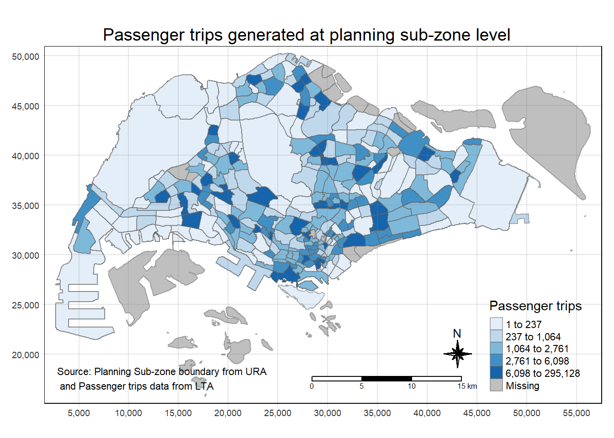

pacman::p_load(tmap,sf,tidyverse,knitr,h3jsr)In-class Exercise 1: My First Date with Geospatial Data Analytics
Getting Started
The code chunk below loads the following packages:
tmap: for thematic mapping
sf: for geospatial data handling
tidyverse: for non-spatial data handling
Preparing the Flow Data
Importing the OD data
Firstly, we will import the Passenger Volume by Origin Destination Bus Stops data set downloaded from LTA DataMall by using read_csv() of readr package.
odbus <- read_csv("data/aspatial/origin_destination_bus_202308.csv")Check odbus tibble data frame that values in OROGIN_PT_CODE and DESTINATION_PT_CODE are in numeric data type.
glimpse(odbus)Rows: 5,709,512
Columns: 7
$ YEAR_MONTH <chr> "2023-08", "2023-08", "2023-08", "2023-08", "2023-…
$ DAY_TYPE <chr> "WEEKDAY", "WEEKENDS/HOLIDAY", "WEEKENDS/HOLIDAY",…
$ TIME_PER_HOUR <dbl> 16, 16, 14, 14, 17, 17, 17, 17, 7, 17, 14, 10, 10,…
$ PT_TYPE <chr> "BUS", "BUS", "BUS", "BUS", "BUS", "BUS", "BUS", "…
$ ORIGIN_PT_CODE <chr> "04168", "04168", "80119", "80119", "44069", "4406…
$ DESTINATION_PT_CODE <chr> "10051", "10051", "90079", "90079", "17229", "1722…
$ TOTAL_TRIPS <dbl> 7, 2, 3, 10, 5, 4, 3, 22, 3, 3, 7, 1, 3, 1, 3, 1, …Origin & Destination Bus Stop Code
odbus$ORIGIN_PT_CODE <-
as.factor(odbus$ORIGIN_PT_CODE)
odbus$DESTINATION_PT_CODE <-
as.factor(odbus$DESTINATION_PT_CODE)Extracting the Study Data
Filter out data that belong to trips that occur on “Weekday” and “7-9am”
origin7_9 <- odbus %>%
filter(DAY_TYPE == "WEEKDAY") %>%
filter(TIME_PER_HOUR >= 7 &
TIME_PER_HOUR <= 9) %>%
group_by(ORIGIN_PT_CODE) %>%
summarise(TRIPS = sum(TOTAL_TRIPS))Check data table
kable(head(origin7_9)) | ORIGIN_PT_CODE | TRIPS |
|---|---|
| 01012 | 1617 |
| 01013 | 813 |
| 01019 | 1620 |
| 01029 | 2383 |
| 01039 | 2727 |
| 01059 | 1415 |
Output saved in rds format for future use
write_rds(origin7_9, "data/rds/origin7_9.rds")Import the rds file into R environment
origin7_9 <- read_rds("data/rds/origin7_9.rds")Working with Geospatial Data
Two geospatial data (shapefile) will be used for this exercise:
BusStop: Provides location of bus stop as at Q4 2022
MPSZ-2019: This data provides the sub-zone boundary of URA Master Plan 2019
Importing geospatial data
busstop <- st_read(dsn = "Data/geospatial",
layer = "BusStop") %>%
st_transform(crs = 3414)Reading layer `BusStop' from data source
`C:\lnealicia\ISSS624\Inclass_ex1\Data\Geospatial' using driver `ESRI Shapefile'
Simple feature collection with 5161 features and 3 fields
Geometry type: POINT
Dimension: XY
Bounding box: xmin: 3970.122 ymin: 26482.1 xmax: 48284.56 ymax: 52983.82
Projected CRS: SVY21Check structure of busstop sf tibble data frame
glimpse(busstop)Rows: 5,161
Columns: 4
$ BUS_STOP_N <chr> "22069", "32071", "44331", "96081", "11561", "66191", "2338…
$ BUS_ROOF_N <chr> "B06", "B23", "B01", "B05", "B05", "B03", "B02A", "B02", "B…
$ LOC_DESC <chr> "OPP CEVA LOGISTICS", "AFT TRACK 13", "BLK 239", "GRACE IND…
$ geometry <POINT [m]> POINT (13576.31 32883.65), POINT (13228.59 44206.38),…Repeat for MPSZ
mpsz <- st_read(dsn = "data/geospatial",
layer = "MPSZ-2019") %>%
st_transform(crs = 3414)Reading layer `MPSZ-2019' from data source
`C:\lnealicia\ISSS624\Inclass_ex1\Data\Geospatial' using driver `ESRI Shapefile'
Simple feature collection with 332 features and 6 fields
Geometry type: MULTIPOLYGON
Dimension: XY
Bounding box: xmin: 103.6057 ymin: 1.158699 xmax: 104.0885 ymax: 1.470775
Geodetic CRS: WGS 84Check structure of mpsz sf tibble data frame
glimpse(mpsz)Rows: 332
Columns: 7
$ SUBZONE_N <chr> "MARINA EAST", "INSTITUTION HILL", "ROBERTSON QUAY", "JURON…
$ SUBZONE_C <chr> "MESZ01", "RVSZ05", "SRSZ01", "WISZ01", "MUSZ02", "MPSZ05",…
$ PLN_AREA_N <chr> "MARINA EAST", "RIVER VALLEY", "SINGAPORE RIVER", "WESTERN …
$ PLN_AREA_C <chr> "ME", "RV", "SR", "WI", "MU", "MP", "WI", "WI", "SI", "SI",…
$ REGION_N <chr> "CENTRAL REGION", "CENTRAL REGION", "CENTRAL REGION", "WEST…
$ REGION_C <chr> "CR", "CR", "CR", "WR", "CR", "CR", "WR", "WR", "CR", "CR",…
$ geometry <MULTIPOLYGON [m]> MULTIPOLYGON (((33222.98 29..., MULTIPOLYGON (…Geospatial Data Wrangling
Combining Busstop & mpsz
busstop_mpsz <- st_intersection(busstop, mpsz) %>%
select(BUS_STOP_N, SUBZONE_C) %>%
st_drop_geometry()Save output into rds format
write_rds(busstop_mpsz, "data/rds/busstop_mpsz.csv") Append the planning subzone code from busstop_mpsz onto odbus7_9 data frame.
origin_data <- left_join(origin7_9 , busstop_mpsz,
by = c("ORIGIN_PT_CODE" = "BUS_STOP_N")) %>%
rename(ORIGIN_BS = ORIGIN_PT_CODE,
ORIGIN_SZ = SUBZONE_C)Check for duplicate records
duplicate <- origin_data %>%
group_by_all() %>%
filter(n()>1) %>%
ungroup()Retain unique records only
origin_data <- unique(origin_data)Update data with the planning subzone codes
mpsz_origtrip <- left_join(mpsz,
origin_data,
by = c("SUBZONE_C" = "ORIGIN_SZ"))Choropleth Visualisation
Choropleth map showing the distribution of passenger trips at planning sub-zone level.
tm_shape(mpsz_origtrip)+
tm_fill("TRIPS",
style = "quantile",
palette = "Blues",
title = "Passenger trips") +
tm_layout(main.title = "Passenger trips generated at planning sub-zone level",
main.title.position = "center",
main.title.size = 1.2,
legend.height = 0.45,
legend.width = 0.35,
frame = TRUE) +
tm_borders(alpha = 0.5) +
tm_compass(type="8star", size = 2) +
tm_scale_bar() +
tm_grid(alpha =0.2) +
tm_credits("Source: Planning Sub-zone boundary from URA\n and Passenger trips data from LTA",
position = c("left", "bottom"))